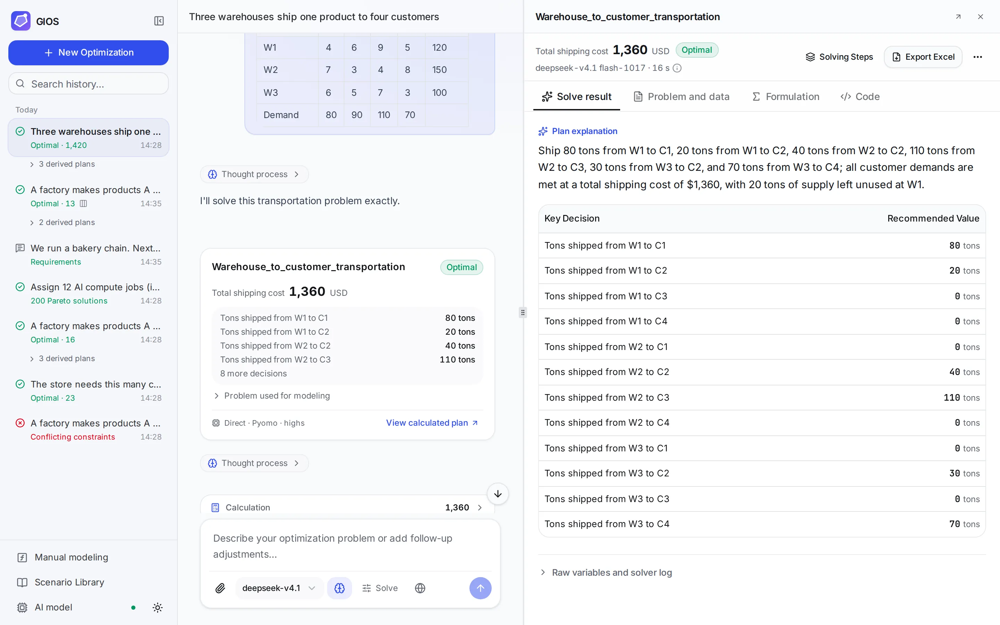

General Intelligent Optimization Solver turns a business problem into an optimization plan you can check line by line. Describe goals and constraints in plain language and attach your spreadsheets. The platform writes a mathematical model and solver code, runs a real solver in an isolated Docker environment, and explains the result in business terms.
Linear, integer and other mathematical programs go through modeling libraries such as Pyomo and OR-Tools to solvers such as HiGHS, SCIP and CP-SAT. Large combinatorial problems and multi-objective trade-offs can use the heuristic search in AutoCO. Every plan keeps its problem statement, data, model, code and solver record.
Choose an entry point#
| Entry | Starting point | Next actions |
|---|---|---|
Optimization chat (home page /) | Describe the problem or drop in Excel/CSV | The assistant models and solves it; read the explanation, ask follow-ups, change conditions or compare scenarios |
Manual modeling (/model) | A clear problem statement and a method, library and model you want to choose yourself | Pick from 9 modeling methods, 5 modeling libraries and several solvers; “Multi-plan comparison” runs up to 12 side by side |
| Requirements assistant | A business idea still taking shape | Turn the conversation into an editable requirements draft, then apply it to manual modeling |

Start here#
- You have access to a service: complete the production quickstart, then check its formulation and known result.
- You need to host a service: install and start it, configure a model preset, then follow the quickstart.
- You are preparing a business problem: identify decisions, objectives, constraints, units and data sources. Use the requirements assistant to resolve missing information before modeling.
For page or run failures, use the symptom-based troubleshooting guide.
From requirements to a usable plan#

Mermaid source
flowchart TB
Input["Describe requirements and add data"] --> Model["Generate formulation and code"]
Model --> Solve["Actual solver computation"]
Solve --> Result["Inspect plan and process"]
Result --> Use["Export, discuss and compare"]
Use -->|Revise| Input
A run retains statement, attachments, configuration, formulation, code, values and steps. Original and revised plans remain connected to their inputs.
The model translates the problem into a formulation and code. By default, a Docker Worker executes that code and calls the solver. An “optimal” status applies to the mathematical model that was solved; check that it captures the business rules. Interactive documentation examples compute small, bounded problems and do not establish platform-wide performance or correctness guarantees.
AutoCO returns the heuristic results and Pareto candidates found within its search budget; it does not guarantee global optimality or a complete Pareto front. Check the algorithm, objective directions, constraint handling and actual result status before using a plan.
Everyday features#
| Task | Guide |
|---|---|
| Add tables and edit fields or values | Upload and edit data |
| Read production, staffing or allocation decisions | Results and exports |
| Query a decision or total costs | Discuss a plan |
| Change a requirement and compute another plan | Revisions |
| Compare budgets, demand or resources | Scenarios |
| Find past tasks and record decisions | History, tags and reports |
Understand modeling and computation#
Methods covers 9 modeling methods: Direct, OR-LLM-Agent, LLMOPT, TriVAL and BIND, AutoCO for large combinatorial and multi-objective tasks, plus OptiMUS, CoE and OptiTree. Each page explains the mechanism and includes a Mermaid diagram, a step-by-step walkthrough and the current parameters.
Libraries and solvers covers 5 modeling libraries (Pyomo, OR-Tools, CVXPY, PySCIPOpt, CasADi), native interfaces, backend compatibility and complete runnable examples.
Watch and interact#
Docs include localized workbench recordings, screenshots and interactive examples. Download quickstart data, step through method artifacts, or change solver-example parameters and inspect computed results.
The interface supports Chinese, English and light/dark/system themes. Desktop dividers resize work areas; narrow screens use tabs for main content and assistants.
New runs request explanatory prose in the selected interface language. Foreign-language problem statements and historical formulations can use cached reading translations. Changing language does not rewrite source statements, code or saved records. Live stages use localized labels; raw model output is available on demand and may contain English, code or tool fields. See language and display issues.
Teams and scripts#
Team deployment covers shared services, HTTPS and access configuration. Usage and backups covers quotas, concurrency and data maintenance. CLI and Python runs the same modeling workflows from existing programs.
General Intelligent Optimization Solver is developed by the EIPI team, with publicly maintained source and documentation.